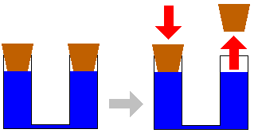

Fysica & Geneeskunde
Maarten Schroeven
Enkele afspraken
GSM's uit of stil
Vragen? Stel ze!
Disclaimer
Ik ben een IT'er, geen fysicus of dokter
Fysica
Algemeen
Druk ($p$) & Kracht ($F$)
- Een scherpe nagel diep in plank
- Een hamer niet diep in plank
- Druk is een kracht per oppervlakte ($p = \frac{F}{A}$)
Massa ($m$) & Gewicht ($G$)
-
Het gewicht is de kracht waarmee een lichaam (aarde) een ander lichaam (mensen) aantrekt
- Eenheid: Newton ($N$)
-
De grootheid waarmee wordt gemeten hoe gemakkelijk het is om een lichaam te versnellen, noemen we zijn massa ($m$)
- Eenheid: Kilogram ($kg$)
$1kg = 9,81N \approx 10N$
$1 bar = 100 000 Pa = 100 000\frac{N}{m^{2}}$
Samenstelling van lucht
- 78.08% stikstof ($N_{2}$)
- 20.95% zuurstof ($O_{2}$)
- 0.03% koolstofdioxide ($CO_{2}$)
- 0.94% edelgassen
Fysica
Druk
Atmosferische (lucht) druk
Hydrostatische (water) druk
Wet van Pascal
Een druk, uitgeoefend op een deel van een vloeistof, plant zich in alle richtingen voort met dezelfde grootte.
Absolute druk ($p_{abs}$)

Luchtverbruik
Oefening op luchtverbruik
- Hoeveel lucht zal ik verbruiken als ik 15 minuten op 15 meter duik?
-
- tijd = 15 minuten
- GOV = 20l/min
- $p_{abs} = 2,5bar$
- verbruik op diepte: $p_{abs} \cdot GOV =$ $2,5bar \cdot 20\frac{l}{min} = 50\frac{barl}{min}$
- totaal verbruik: $50\frac{barl}{min} \cdot 15min = 750barl$
Wet van Boyle-Mariotte
Bij een constante temperatuur is het volume van een gas omgekeerd evenredig met de druk in het gas
Fysica
Wet van Archimedes
Wet van Archimedes

Een lichaam ondergedompeld in een vloeistof, ondergaat een opwaartse stuwkracht gelijk aan het gewicht van de verplaatste vloeistof.
Opwaartse stuwkracht
opwaartse stuwkracht < gewicht blok
De blok zal zinken/zweven/stijgen
Opwaartse stuwkracht

opwaartse stuwkracht = gewicht blok
De blok zal zinken/zweven/stijgen
Opwaartse stuwkracht

opwaartse stuwkracht > gewicht blok
De blok zal zinken/zweven/stijgen
Opwaartse stuwkracht
drijven
opwaartse stuwkracht ondergedompeld deel
=
gewicht blok
voorbeeld: boot
Opwaartse stuwkracht
- Onafhankelijk van diepte
- Afhankelijk van volume
- Afhankelijk van dichtheid van vloeistof
Dichtheid
Gelijke volumes van verschillende stoffen hebben een verschillend gewicht en dus ook een verschillende massa.


Dichtheid
Voor duikers zijn de belangrijkste:
- Zuiver zoet water: $1000\frac{kg}{m^{3}} = 1,000\frac{kg}{dm^{3}} = 1,000\frac{kg}{l}$
- Zout water: $1025\frac{kg}{m^{3}} = 1,025\frac{kg}{dm^{3}} = 1,025\frac{kg}{l}$
Toepassingen in de duiksport
- Uittrimmen
- Uitloden
- Hefballon
- Vlotter aan een buddyline
Oefeningen op de wet van Archimedes
- Een duiker met zijn duikuitrusting 'weegt' 95kg, om perfect uitgetrimd te zijn in zoet water heeft hij 5kg lood nodig. Hoeveel lood heeft hij nodig in zout water?
Zoet water
zweven: $gewicht_{duiker} = gewicht_{water}$
Zout water
zweven: $gewicht_{duiker} = gewicht_{water}$
⇒ deze duiker (95kg) heeft 7,5kg lood nodig in zout water
Fysica
Oplossen van gassen
Wet van Henry
Bij constante temperatuur en bij verzadiging is de hoeveelheid opgelost gas in een vloeistof recht evenredig met de druk van dat gas in contact met die vloeistof.
Wet van Henry
Toegepast op duiken
Fysica
Allerlei
Geluid
- Geluidsverplaatsing in lucht: +- 340m/s
- Geluidsverplaatsing in water: +- 1440m/s
- => niet weten vanwaar geluid komt (boten!)
Waarneming
- Onze ogen zijn gemaakt voor in lucht te werken
- Onderwater lijkt alles troebel
- => we doen een duikbril aan
- Nadeel: inval op oog veranderd
- => Alles lijkt 1/3 groter en 1/4 dichter
Kleuren
- Kleuren worden geapsorbeerd
- Op diepte lijkt alles blauw
- => neem een duiklamp mee voor originele kleuren
Samenvatting
- Wet van Pascal
- Wet van Boyle-Mariotte
- Wet van Archimedes
- Wet van Henry
- Geluid / Waarneming / Kleuren